Door Glass - Wind Noise: Overview
88acura04YEAR MODEL VIN APPLICATION
ALL LEGEND COUPE ALL
December 21, 1988
BULLETIN NO.
88-023
Wind Noise from the Door Glass
PROBLEM
Air leaks around the left or right door glass sealing area.
CORRECTIVE ACTION
Adjust the height, the fore/aft position, and the camber of the door glass as described below.
NOTE: Before adjusting the door glass, check the overall fit of the door. If the door doesn't fit or close properly, that may be the cause of the wind noise. If necessary, adjust the door as described in the Body section of the service manual.
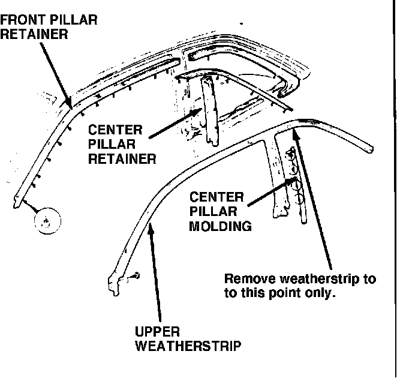
PROCEDURE
1. Roll down the rear quarter window on whichever side of the car you're working on. Then remove the door panel and speaker as described in the Body section of the service manual.
CAUTION: Some of the center pillar molding clips will brook off when you remove the molding in the following step. Make sure you have a new molding on hand.
2. Remove the center pillar molding, then remove the upper weatherstrip from the top of the window opening and the center pillar. (Leave the weatherstrip in place around the quarter window.) Remove the center and front pillar retainers, then pull the door trim away from the window opening area.
3. If you're working on the passenger's door, remove the window switch from the door panel, set the panel aside, and reconnect the switch to the door wire harness.
If you're working on the driver's door, connect the Auxiliary Window Switch, T/N 07KAZ-001000A, to the door wire harness as shown below:
AUXLIARY WINDOW DOOR WIRE
SWITCH WIRES HARNESS CONNECTOR
RED to WHT/YEL
GRN to BLK/GRN
BLK to BLK/YEL
4. Hold the door glass and close the door gently to prevent the glass from hitting the body.
CAUTION: Always close the door in this manner when the weatherstrip Is removed.
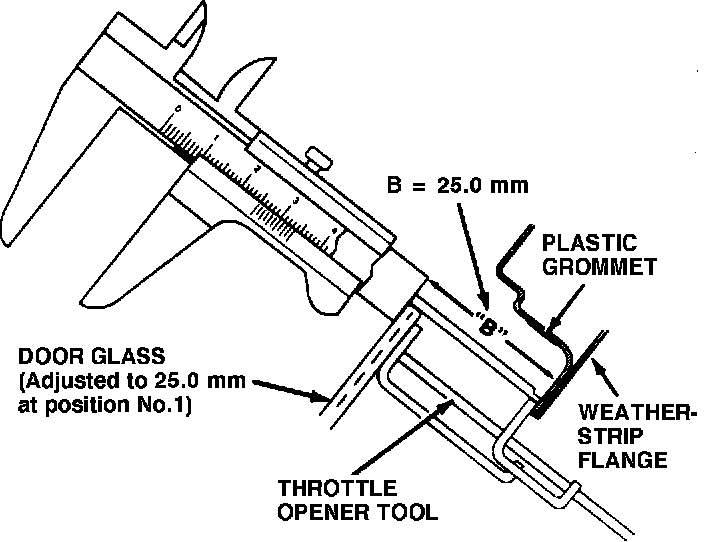
5. With the window up, insert a throttle adjusting tool such as a K-D No. 2205, or equivalent, between the weatherstrip flange and the top of the door glass, as shown. Align the tool with the plastic grommet nearest the rear of the window opening (position 1). Adjust the tool so that dimension "B" (the distance from the weatherstrip flange to the outside of the glass) is 25.0 +/- 0.5 mm.
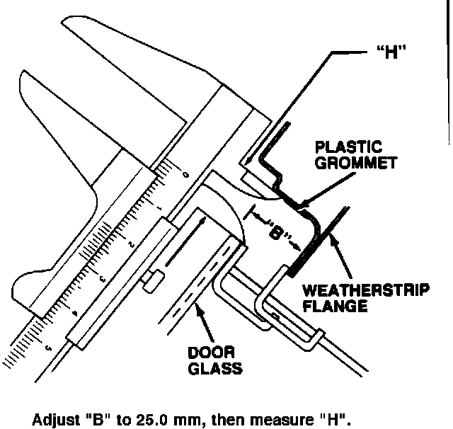
6. Measure dimension "H" (the gap between the edge of the glass and the top of the window opening) at positions 1 through 9, as shown on the attached worksheet. Record the measurements on a copy of the worksheet. With "B" at 25.0 mm, "H" should be 20.0 +/- 1.0 mm.
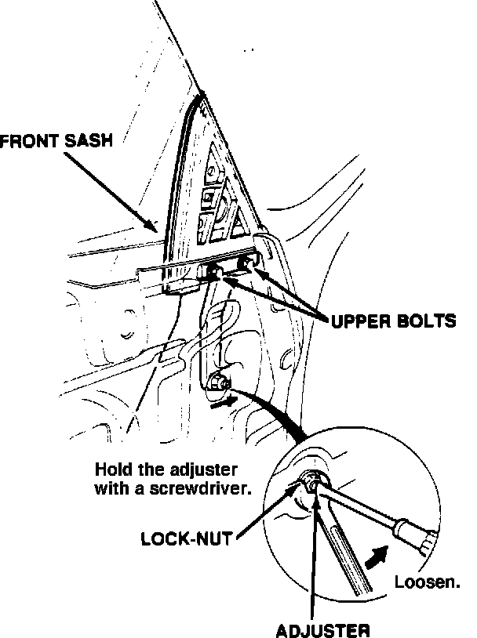
7. If "H" is out of spec, loosen the front sash adjuster lock-nut and upper bolts and push the sash all the way forward.
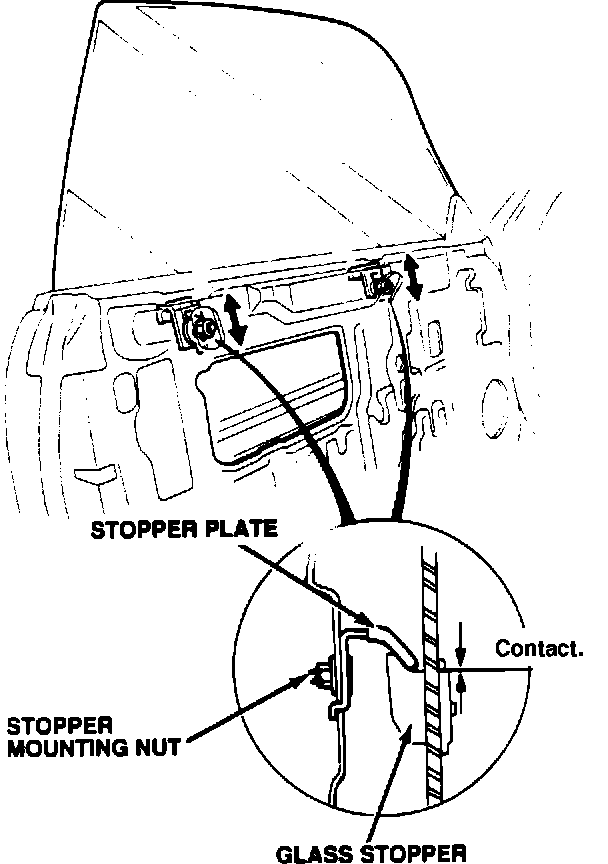
Then loosen the stopper mounting nuts and adjust the stopper plates until "H" is 20.0 +/- 1.0 mm at positions 1 through 5.
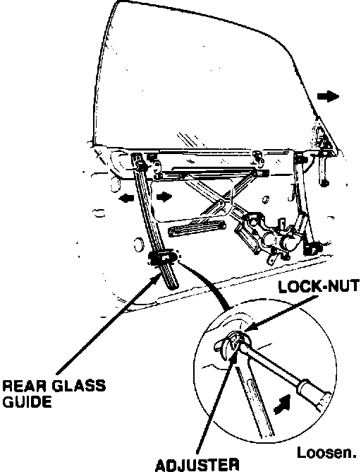
If necessary, loosen and adjust the rear glass guide until "H" is within spec at positions 6 through 9.
You may have to go back and forth between the stopper plate and rear guide adjustments to get all nine positions within spec. After completing the adjustments, realign the front sash with the glass. Record all the "H" measurements (with "B" at 25 mm) on the worksheet.
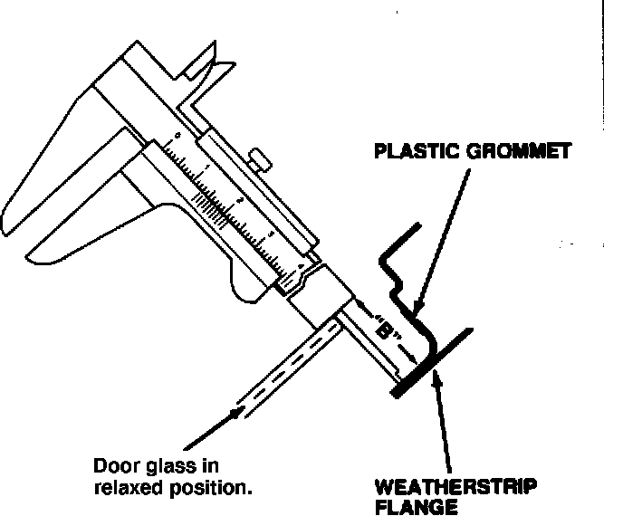
8. Remove the adjusting tool and allow the door glass to seek its normal, relaxed position. Measure "B" at all 12 positions shown on the worksheet, and record those measurements on the worksheet. "B" should be 13.0 +/- 1.0 mm with the glass in the relaxed position.
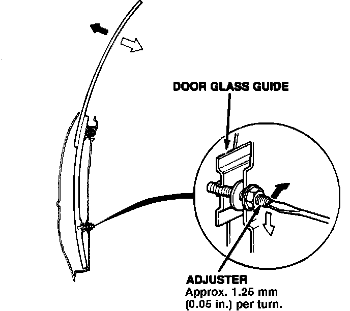
9. If "B" is out of spec, adjust the glass camber by turning the door glass guide adjusters until "B" is 13.0 +/- 1.0 mm at as many of the 12 positions as possible. You may not be able to adjust all 12 positions to spec, especially positions 10 through 12.
NOTE:
^ If you're able to adjust positions 1 through 9 to spec, record all 12 measurements on the worksheet, then go to step 11.
^ If you're unable to adjust positions 1 through 9 to spec, shim and adjust both glass guides as described in steps 10 through 12. If only positions 1 through 5 are out of spec, shim just the rear guide. If only positions 6 through 9 are out of spec, shim just the front guide.
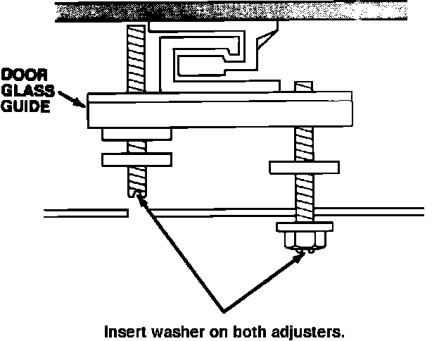
10. Loosen one of the glass guide lock-nuts until it's flush with the end of the adjuster. Remove the other lock-nut completely and turn the adjuster in until its end is flush with the inner door skin. Install a washer, P/N 90509-642-000, over the adjuster, between the glass guide and inner door skin. Turn the adjuster back out and, reinstall the lock-nut. Install a washer on the other adjuster in the same manner.
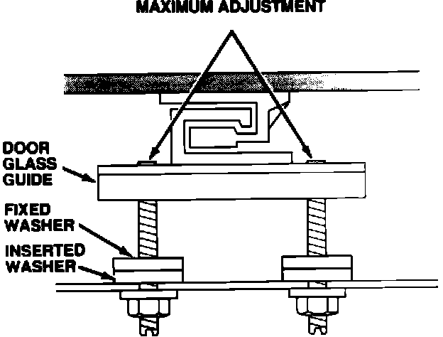
CAUTION: After adjusting the glass guides in the following step, don't lower the window before performing stop 12.
11. Adjust the glass guides to the maximum camber position (the ends of the adjusters flush with the back of the glass guides). Remeasure "B" as in step 8 and record the measurements on the worksheet.
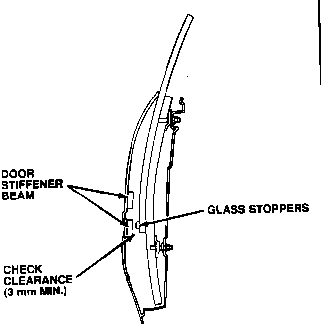
12. Slowly lower the window until the glass stoppers are even with the lower door stiffener beam. Make sure there's at least 3 mm of clearance between the glass stoppers and the beam.
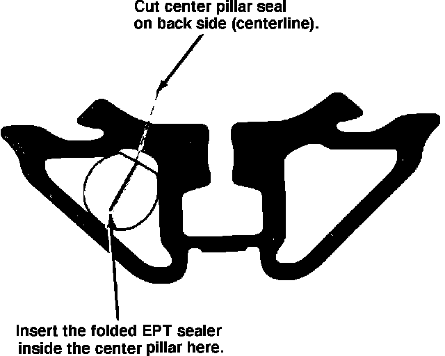
13. Reinstall the door trim, the center and front pillar retainers, the speaker, and the door panel.
14. If your last measurement for position 11 was greater than 18 mm, go to step 15. If the measurement was 18 mm or less, go to step 16.
15. Using a single-edged razor blade or utility knife, split the door glass side of the center pillar seal lengthwise down the back, as shown. Cut a 20 x 300 mm piece of EPT sealer 10t. Fold the EPT length-wise so the adhesive side sticks together. Insert the EPT inside the center pillar seal. Close the center pillar seal with "Super Glue" (cyano acrylate adhesive), then weather-proof the seal with weatherstrip adhesive.
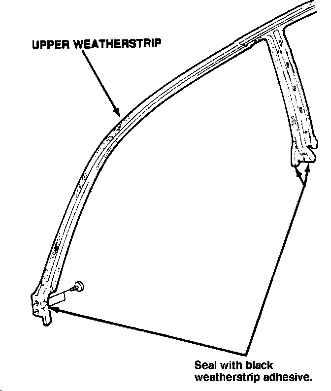
16. Reinstall the upper weatherstrip and the center pillar molding. Seal the ends of the weatherstrip with black weatherstrip adhesive as shown.
PARTS INFORMATION
Center pillar molding, Right: P/N 72525-SG0-003
Left: P/N 72575-SG0-003
Washer, 22 x 8 x 2 mm: P/N 90509-642-000
EPT sealer, 10t: P/N 06992-SA5-000
WARRANTY CLAIM INFORMATION
Operation number: 835025 (one side) 836030 (both sides)
Flat rate time: 1.8 hours (one side) 3.6 hours (both sides)
Failed P/N: 72325-SG0-013ZD
Defect code: 060
Contention code: B99